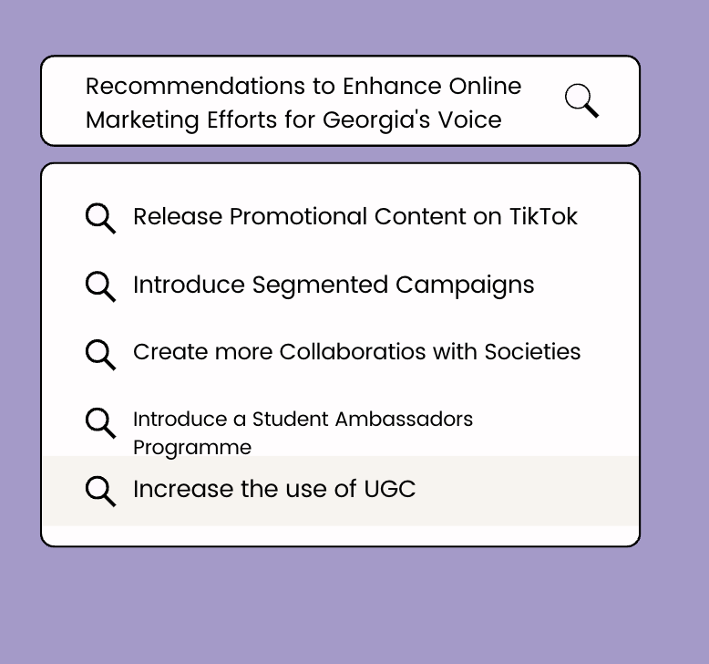
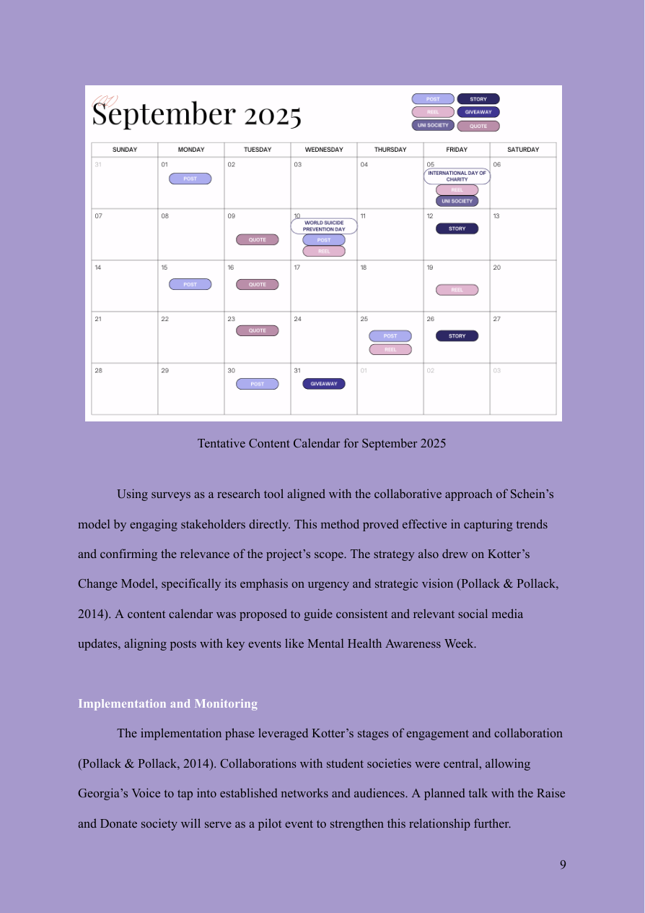

INDIVIDUAL CONSULTING PROJECT
Connecting a charity
with its student community.
A consulting project for Georgia’s Voice focused on awareness and engagement among students at Penryn Campus.
ORIGINAL PRESENTATION
Original consulting presentation materials
These materials show the proposed scope and recommendations for Georgia’s Voice. They describe proposed work and communication strategies, not measured growth or achieved outcomes.



The brief
Explore how Georgia’s Voice could improve its visibility, update its social-media approach and strengthen connections with the university community within limited resources.
My approach
- Worked with the client through virtual consultation and email to define the scope.
- Reviewed existing communications and client-provided social-media demographics.
- Conducted an anonymous student survey to explore awareness and preferred communication channels.
- Used a project timeline to organise research, strategy development and delivery.
Research findings
The survey suggested a gap between awareness of the charity itself and awareness of its campus support groups and Falmouth store. Respondents expressed interest in relatable social content and opportunities for involvement.
Deliverables & recommendations
- A proposed content calendar to support consistent communications.
- Recommendations for Instagram content and potential TikTok expansion.
- Suggestions for audience segmentation, student ambassadors and society partnerships.
- Groundwork for a planned collaboration with Raise and Donate.
What was established
The project produced research-led recommendations and partnership groundwork. Definitive engagement metrics were unavailable within the project timeframe, and the proposed society event had not taken place when the report was written. These are not presented as measured increases in reach, participation or revenue.
Reflection
The work reinforced the importance of defining a realistic scope, adapting recommendations to a client’s resources, and separating proposed activities from implemented and measured outcomes.
← All projectsPROJECT EVIDENCE
From research to recommendations
Original report excerpts show the proposed content calendar and outreach recommendations. Proposed activities are distinct from implemented or measured outcomes.

